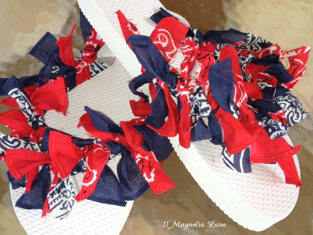
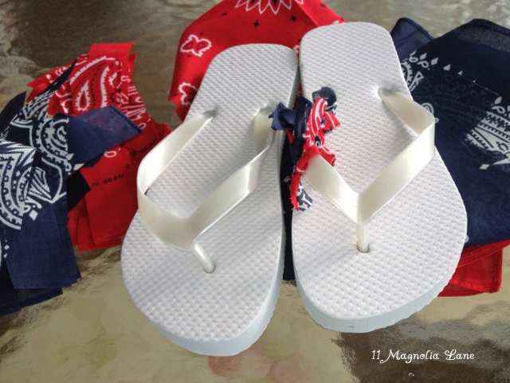

Summer Crafts
Looking for fun crafts to entertain you kids this summer? Look no further. We have compiled a list of our favorite summertime crafts to keep you busy!
Preschool - 1st Grade
Finger Puppets
Materials:
- bright blue, pink and yellow
- Thin red ribbon
- Fabric glue
- Black fabric marker
- Scissors
- Whale template
- Jellyfish template
Instructions:
Whale Finger Puppet
- Fold a piece of bright blue felt in half and use scissors to cut out two identical what shapes. You can create your own shape of print and cut out a template.
- Place fabric glue around the perimeter of one of the whale shapes and leave about an inch of space at the bottom. Carefully place the other whale shape on top so that they match up and press down firmly. You can leave the handle of a paintbrush in the opening of your puppet while it dries to ensure it does not seal shut.
- When your puppet is dry, draw an eye, mouth, and any other details you wish with a black fabric marker. A tiny pink circle of felt can be glued on for a cheek. Repeat this face on the other side if you wish.
- Once your puppet dries, have fun playing with him or her, or display it on a bamboo skewer for a great summer decoration!
Jellyfish Finger Puppet
- Fold a piece of bright pink felt in half and use scissors to cut out two identical semi-circle shapes. Use the template if you would like.
- Cut 5 pieces of red ribbon for tentacles. Three pieces should be approximately 10 inches, while the other two should be around 5 inches. Glue these towards the bottom of one of your cut shapes like so:
- Place fabric glue around the rounded part of one of jellyfish shapes {the one with the ribbon pieces} leaving the flat bottom part without glue. Carefully place the identical jellyfish on top and firmly press down. You can leave the handle of a paintbrush in the opening of your puppet while it dries to ensure it does not seal shut.
- Glue two tiny yellow felt circles for eyes and add pupils with a black fabric marker. Use your marker to add a mouth as well.
- Once your puppet dries, have fun playing with him or her, or display it on a bamboo skewer for a great summer decoration!


2nd - 3rd Grade
Bandana Flipflops
Materials
- A pair of rubber flip flops in the appropriate size
- Fabric scissors
- A bandana (or two, or three) in your choice of colors
- Ribbons (optional)
Instructions
- Now, cut your bandana into strips that are about 6″ long. The width can be 1/2″ to about 3/4″, depending on your preference. Obviously, the thinner the strips, the more you’ll need. 6″ is the right length to be able to tie them in a double knot, which is essential, otherwise the bandana strips fall off with activity.
- Knot the strips on the flip flop straps, double knotting and pulling
them tight. Alternate colors according to your color scheme. If you chose
to use ribbons, knot them in the same manner.

